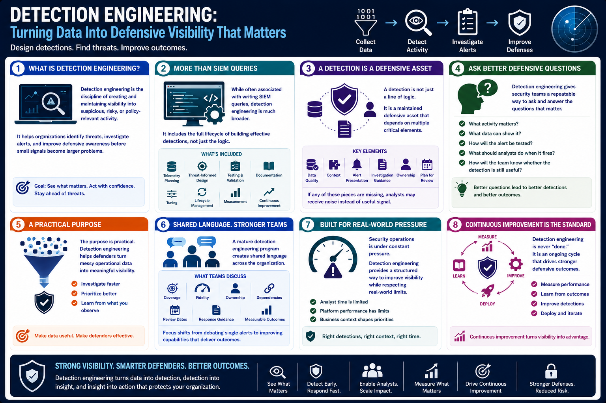

What Is Detection Engineering?
What Is Detection Engineering?
Connecting to LMS... Progress: in progress
Version 1.0 | Date: 2026-06-16 | Educational overview of defensive detection engineering concepts.

Narration
Detection engineering is the discipline of creating and maintaining visibility into suspicious, risky, or policy-relevant activity. Detection engineers design capabilities that help organizations identify threats, investigate alerts, and improve defensive awareness before small signals become larger problems.
Although people often associate detection engineering with writing SIEM queries, the discipline is much broader. It includes telemetry planning, threat-informed design, testing, documentation, tuning, lifecycle management, measurement, and continuous improvement.
A detection is not just a line of logic. It is a maintained defensive asset that depends on data quality, context, alert presentation, investigation guidance, ownership, and a plan for review. If any of those pieces are missing, analysts may receive noise instead of useful signal.
Detection engineering gives security teams a repeatable way to ask important defensive questions. What activity matters? What data can show it? How will the alert be tested? What should analysts do when it fires? How will the team know whether the detection is still useful?
The purpose is practical. Detection engineering helps defenders turn messy operational data into meaningful visibility, so teams can investigate faster, prioritize better, and learn from what they observe in their environment.
A mature detection engineering program also creates shared language. Instead of debating alerts one at a time, teams can discuss coverage, fidelity, ownership, dependencies, review dates, response guidance, and measurable outcomes.
That shift matters because security operations is under constant pressure. Detection engineering gives teams a structured way to improve visibility while respecting the limits of analyst time, platform performance, and business context.